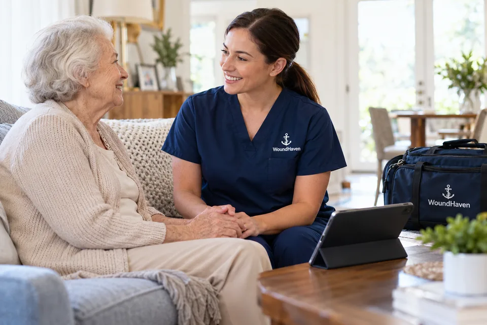
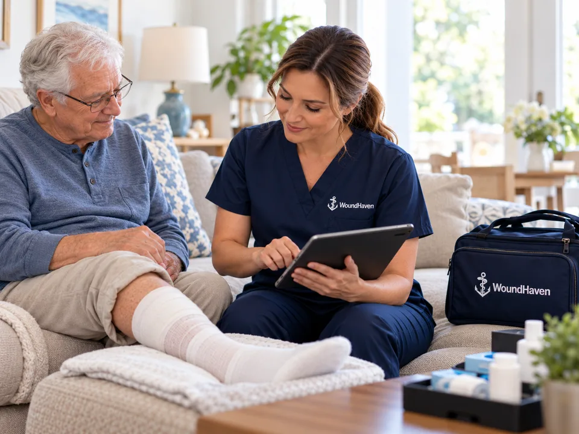

Diabetic Wounds
Evaluation and wound-care support for diabetic wounds and ulcers that require ongoing clinical attention.
Learn MoreMobile wound care in Austin, TX
Wound Haven provides advanced wound care where patients live and receive care. Our team supports patients in homes, skilled nursing facilities, assisted living communities, rehabilitation facilities, and LTAC settings.
Wounds we treat
Wound Haven evaluates and manages acute, chronic, and complex wounds for patients receiving care at home or in supported care environments.
Evaluation and wound-care support for diabetic wounds and ulcers that require ongoing clinical attention.
Learn MoreAssessment and treatment planning for pressure-related wounds and skin breakdown.
Learn MoreCare for wounds associated with venous disease, swelling, and circulation-related concerns.
Learn MoreClinical assessment for wounds where reduced arterial circulation may contribute to delayed healing.
Learn MoreWound-care support for patients experiencing swelling, skin changes, and wounds associated with lymphedema.
Learn MoreAssessment and appropriate wound-care support for burns and other skin-related wounds.
Learn MoreEvaluation for wounds that are not progressing as expected.
Learn MorePersonalized care planning for wounds requiring more advanced assessment and management.
Learn MoreStart with an evaluation of the patient’s wound-care needs.
Request a Wound EvaluationMobile wound care
Travel can create another barrier for patients already dealing with a difficult wound. Wound Haven brings wound-care services closer to patients throughout Austin and other supported Texas service areas.
Receive wound-care evaluation and treatment where the patient lives.
Wound-care support for residents in skilled nursing environments.
Clinical wound-care services brought directly to assisted living communities.
Coordinated wound care for patients receiving rehabilitation services.
Advanced wound-care support for appropriate patients in long-term acute care settings.
Wound care services
Our clinical approach begins with understanding the wound, the patient’s overall needs, and the environment where care is being provided.
Comprehensive wound evaluation to help identify the condition of the wound and guide an appropriate care plan.
Removal of nonviable tissue may be used when clinically appropriate to support wound management.
Compression may be incorporated into care plans for appropriate patients with swelling or venous-related conditions.
Assessment may include vascular testing such as ABI or Doppler when clinically indicated.
Diagnostic information may help clinicians better understand factors affecting a wound and guide treatment decisions.
NPWT or wound-vac therapy may be used for appropriate wounds as part of an individualized treatment plan.
Skin substitutes, placental membrane products, or other advanced tissue options may be considered when clinically appropriate.
Patients, families, and caregivers can receive guidance to support the wound-care plan between visits.
Why Wound Haven
Our care model is centered on wound evaluation, treatment, monitoring, and coordination.
About Wound Haven
Wound Haven brings care to patients rather than requiring every patient to travel to an office.
We support appropriate patients in homes, skilled nursing facilities, assisted living, rehab facilities, and LTAC environments.
Care plans are developed around the patient’s wound, clinical needs, and care environment.
Communication with patients, families, caregivers, facilities, and referral partners helps support continuity of care.
Getting started
Share basic information about the patient, wound concern, and current care setting.
Our team reviews the information provided and determines the appropriate next step.
When appropriate, wound-care services are coordinated where the patient lives or receives care.
The care plan may include continued assessment, documentation, treatment adjustments, and communication as clinically appropriate.

Leading technology
Wound care requires more than a single visit. Clinical documentation, wound-progress monitoring, and communication can help the care team maintain better visibility throughout treatment.
Where supported by Wound Haven’s confirmed systems, technology may help with:
Two ways to get started

For patients & families
Tell us what is happening, where the patient is receiving care, and how we can contact you.
Our team will review the information and help determine the appropriate next step.

For healthcare providers
Wound Haven provides a clear referral pathway for healthcare professionals and care facilities seeking advanced wound-care support.
We work with patients receiving care in homes, skilled nursing facilities, assisted living, rehab facilities, and LTAC settings.
Texas service areas
Serving Austin, Houston, San Antonio, College Station, Corpus Christi, Beaumont, and surrounding areas. We bring advanced wound care closer to appropriate patients in homes and supported care environments.
Access wound assessment, treatment, monitoring, and coordinated wound-care services without relying solely on traditional office-based care.
Learn about Wound Haven’s wound-care services for patients and care facilities throughout the Houston area.
Explore mobile and bedside wound-care options available throughout the San Antonio area.
Frequently asked questions
Have a question about your situation? Our team can help you find the appropriate next step.
Contact Wound HavenWound Haven supports patients with a range of wound concerns, including diabetic wounds, pressure injuries, venous wounds, arterial wounds, lymphedema-related wounds, burns, skin conditions, non-healing wounds, and other complex wounds.
Austin is one of Wound Haven’s primary service areas. Care may be provided in patient homes and supported facility environments based on the patient’s needs and service availability.
Wound Haven provides care in homes, skilled nursing facilities, assisted living communities, rehabilitation facilities, and LTAC settings. Wound Haven does not currently operate an in-office care model.
Eligibility depends on the patient’s wound, clinical needs, care setting, and other relevant factors. Contact Wound Haven so the team can review the situation.
Referral requirements can depend on the patient’s situation and care pathway. Patients, families, caregivers, and healthcare providers can contact Wound Haven to determine the appropriate next step.
Use the Refer Patient option in the navigation and select “I am the patient or a family member,” or contact Wound Haven by phone.
Request CareYes. Use Refer Patient and select “I am the patient’s healthcare provider” to access the appropriate referral pathway.
Provider ReferralContact Wound Haven directly to confirm insurance and payment requirements for your situation.
Ask Our Team